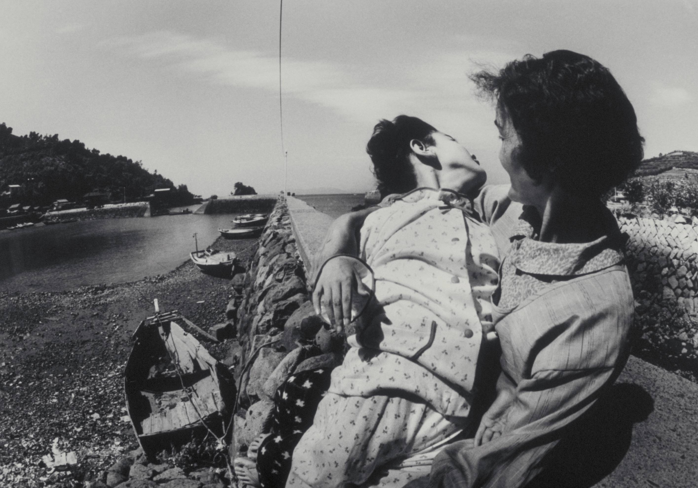

The Minamata Disease Outbreak
The Decades of Silence (1932–1968): For over thirty years, the Chisso Corporation, a chemical factory in Minamata, Japan, discharged untreated wastewater into Minamata Bay. This water contained high concentrations of methylmercury, a highly toxic organic compound. The strategy of the factory was "Out of Sight, Out of Mind," assuming the vast ocean would dilute the poison.

The tragedy began with the cats. In the early 1950s, local residents noticed "dancing cats"—felines that would suddenly convulse, scream, and leap into the sea to drown. Soon, the symptoms appeared in humans. The methylmercury had bioaccumulated in the fish and shellfish that formed the staple diet of the local fishing community. Victims suffered from "Minamata Disease": a horrifying breakdown of the central nervous system that caused numbness, loss of peripheral vision, slurred speech, and eventually, violent tremors and death. Even more tragic was the "Congenital Minamata Disease," where children were born with severe brain damage because the mercury crossed the placental barrier, even if the mothers showed no symptoms.
From Corporate Obstruction to Global Law: The immediate strategy by Chisso and the local government was one of Scientific Obfuscation. When researchers from Kumamoto University identified the factory's wastewater as the source in 1956, the company hired its own scientists to "disprove" the link and continued dumping for another 12 years.
Key Facts
Date: 1932–1968 (Discharge period); 1956 (Official discovery)
Location: Minamata Bay, Kumamoto Prefecture, Japan
Casualties: 2,265 officially recognized victims (thousands more suspected); widespread congenital brain damage
Cause: Chronic Industrial Poisoning (Bioaccumulation of methylmercury in fish/shellfish discharged by the Chisso Corporation)
The Economic Pressure Strategy: Chisso attempted to settle with victims through "mimaimai" (sympathy payments) that included a clause stating victims could never sue again, even if new evidence emerged.
The Minamata Convention: The long-term global strategy was the creation of the Minamata Convention on Mercury (2013). This international treaty was designed to ban new mercury mines and phase out mercury use in various products and industrial processes worldwide.
Minamata is the definitive case study in "Bioaccumulation." It teaches us that industrial waste does not disappear; it travels through the food chain and returns to the source. The strategy of prioritizing industrial growth over biological safety led to a generational catastrophe that permanently scarred a population and redefined international chemical law.